Task - Configure
Catalog:
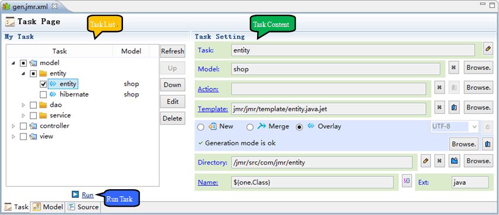
Task List
In the task list, we can manage the tasks and select the tasks to run.
Structure
Task three structures
- Project: The project is a large category, and there are multiple directories under the project.
- Directory: A directory is a small category that can have multiple tasks under a directory.
-
Task: Execute the generated unit, a task that can only new,merge,overlay a file; it contains three types:
 New: When the file does not exist, create a new file and generate new content based on the template.
New: When the file does not exist, create a new file and generate new content based on the template.- Merge: File already exists, According to the template merge the specified part, other parts remain unchanged.
- Overlay: The file already exists. Overlay all the contents again.
For example, here is a task structure for the Web project
- Project: According to the MVC structure, there are 3 projects.
- Directory: Directory structure is divided into entity, dao, service, action, jsp and so on.
- Task: Generated file.
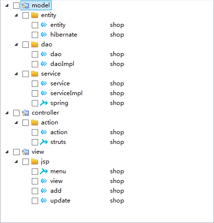
Common actions
Right click menu or right button to see the following actions.
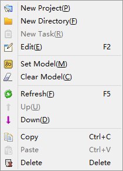
- New Project, New Directory, New Task, Edit
The name of the custom, but the same level cannot rename.
We can modify the model in the task, but if multiple tasks need to modify the model, the efficiency will be low.
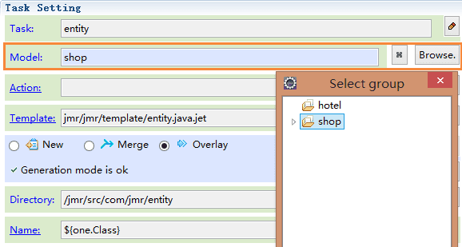
Select multiple tasks setting model
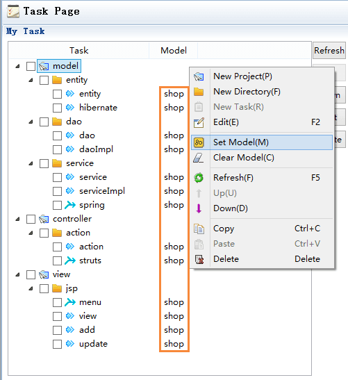
Select model group or model
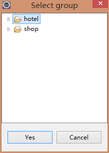
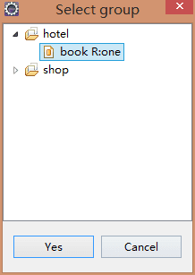
Select model group
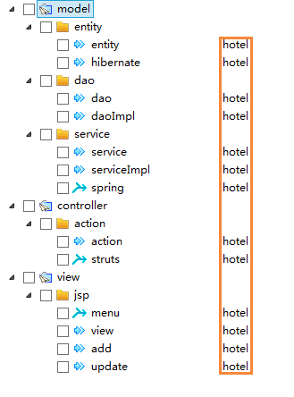
Select model
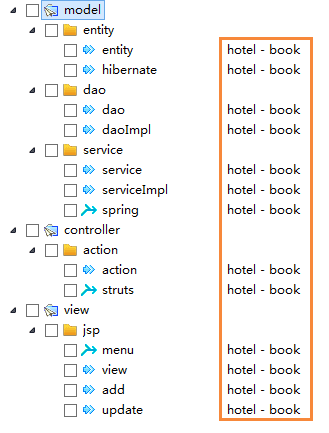
Task State
The task has 3 following states, these states are automatically updated according to changes in the environment. For example, the template has syntax errors, and the file directory cannot be found.
If there is a syntax error in the template, or other error or warn, the task status will change
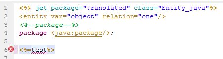
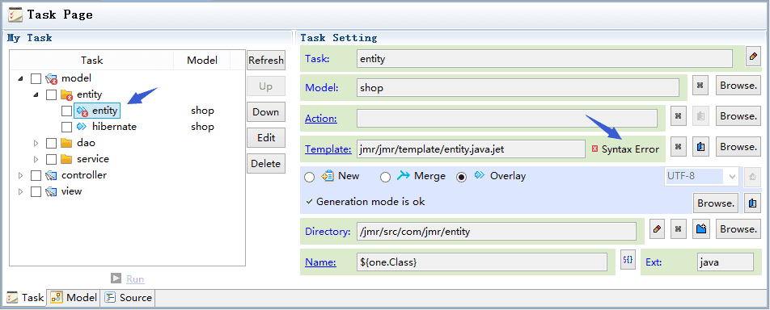
Task status is automatically updated, but sometimes there is delay, you can use refresh.
The order of execution of the task is up and down, and the order of execution of the task can be changed up and down.
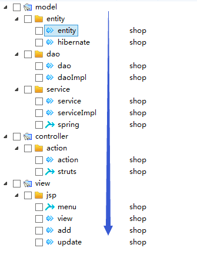
Tasks can be copied and pasted.
Any element can be deleted, the project and directory are deleted, and its child elements are deleted at the same time.
You need to move the mouse to drag and drop, and the task moves from one position to another, which is equivalent to cutting.
Task Content
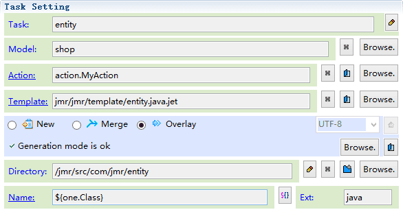
- Model: Click Browse to select the model, and the model can select the model group or model.
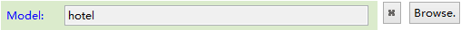
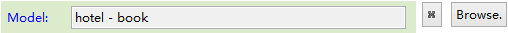
Model source is the list of models in current jmr file.
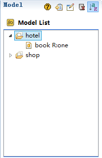
A task can only select one model group or model, and the use between them is different. Please read:entity usage
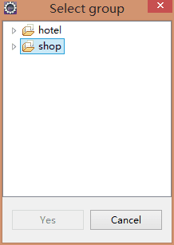
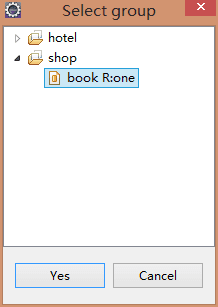
- Action：Click Browse to select Action, Click
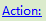 or you can open the Action file. About the usage of Action, please read:Action
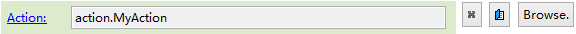
Action must select the class whose parent class is org.jmr.core.JmrActionSupport, and the dialog box matches these classes automatically. Enter ** can view all matching classes. The selected Action must be in the same project.
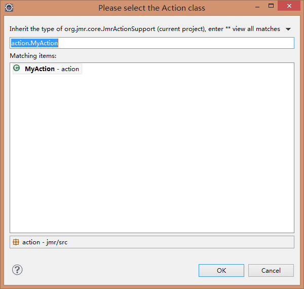
- Template: Click Browse to select template, click
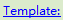 or can create or open a template file.
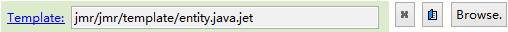
The template selection dialog box can view all templates under the current project. You can enter name filtering in the search box. The selected template must be in the current project.
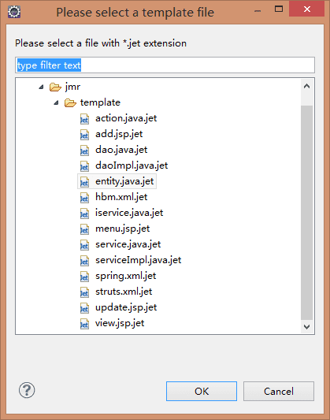
-
Task type:
- New: Is new when the file does not exist. Automatically changes to overlay after the task run.
- Merge: The file already exists. The location of the merge id in the file will be merged, and the other will remain unchanged. For more details on the merge, please read: Merge Usage
- Overlay: The file already exists. The task replace all the contents of the file.
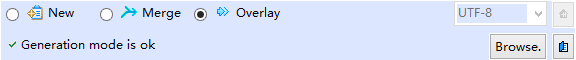
The state of the first run task is new, followed by merge and overlay.
For example, the 2 tasks of spring and struts are adding registration information to the configuration file, and menu adds new link.
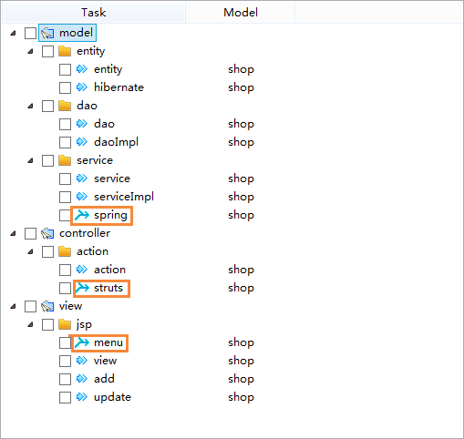
- Directory: File directory, click Browse to select directory.
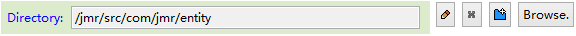
Click to create a new directory, which can be found in any open project.
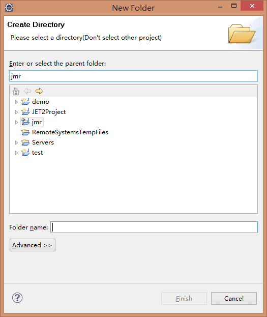
Click expression can be used in a directory. By selecting the directory, you get the value of the directory, and then insert model variables. In the new mode, if the directory does not exist, it will be created automatically.
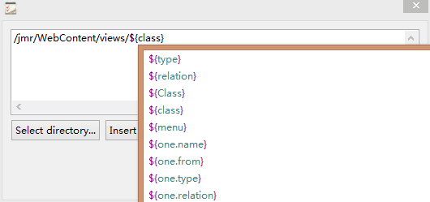
There are 2 kinds of expression:
- ${property}
- ${relation.property}
When you select a model, you can use the ${property}. ${property} is the property of the selected model, you can also use ${relation.property}.
When you select a model group, you can only use ${relation.property}.
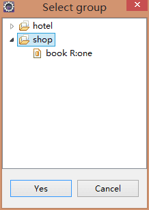
Example: generating directory using expressions.
The model relation is one, and the property class value is book.
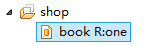
When you select a model, you can use the ${class}, also use ${one.class}.
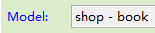
The directory settings are as follows:
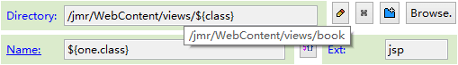
When you select a model group, you can only use ${one.class}.
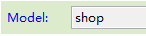
The directory settings are as follows:
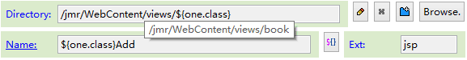
Generated file directory
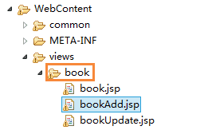
- Name: Generate the name of the file, Double click or enter can be edited.
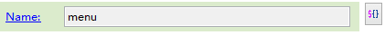
- Click you can use expression in file name.
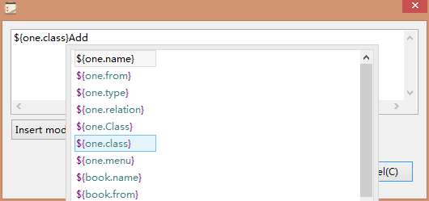
Like directories, you can also use ${property} and ${relation.property}.
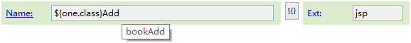
Generated file:
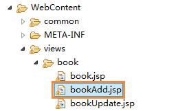
- Ext: Generate file extensions, double-click or enter to edit.
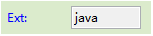